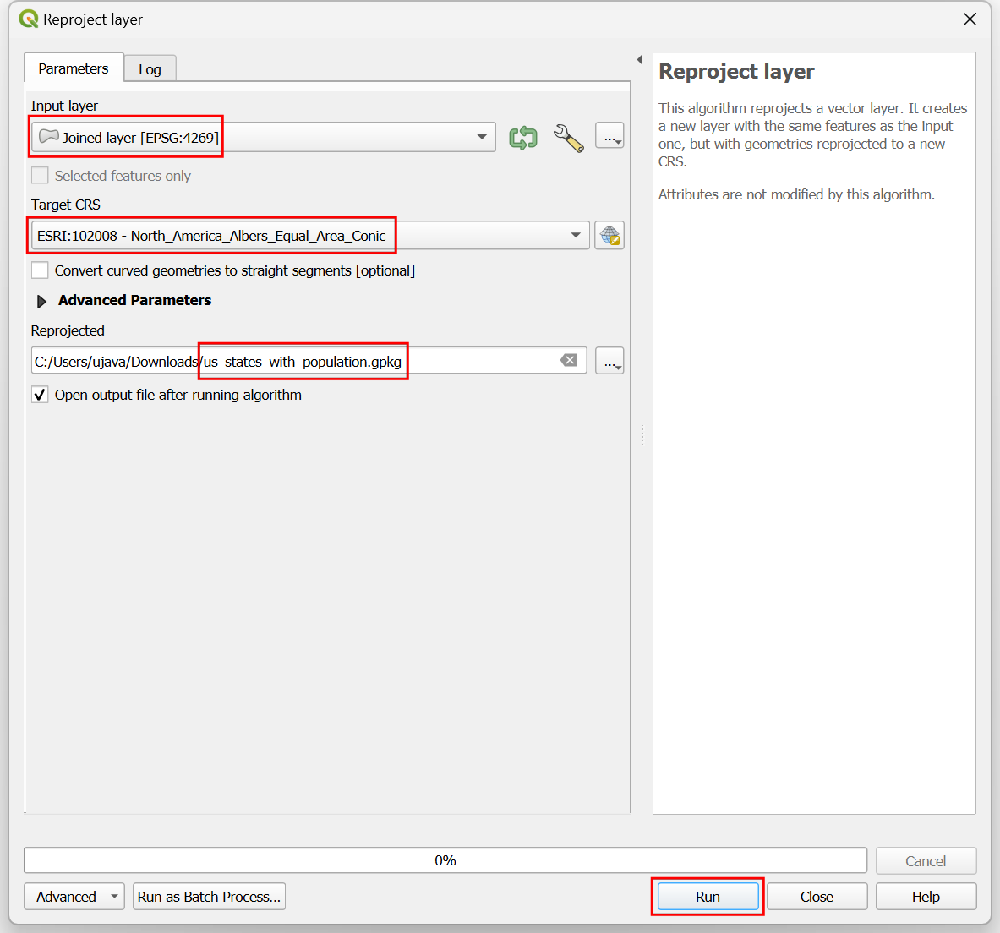
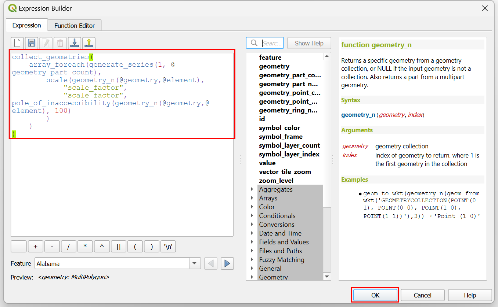
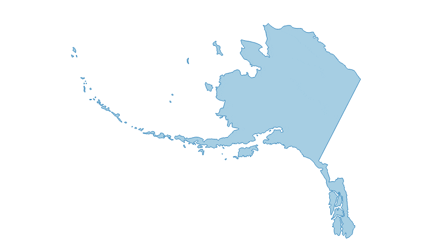

Ujaval Gandhi
Ujaval GandhiCreación de un cartograma animado (QGIS3)¶
El cartograma es un tipo de visualización cartográfica en el que la forma de cada objeto espacial se distorsiona en proporción a una variable. Los cartogramas facilitan la visualización de grandes variaciones en los datos. El método más sencillo para crear un cartograma es escalar el tamaño de cada región en función de una variable. Este método conserva la forma original del polígono y sólo cambia el tamaño. Estos se conocen como Cartogramas isomórficos no contiguos. En este tutorial aprenderemos a utilizar expresiones de QGIS para crear un cartograma y a utilizar el Controlador Temporal para crear una animación que transforme gradualmente los objetos espaciales hasta el tamaño objetivo.
Este tutorial se basa en el excelente tutorial sobre cartogramas de Hans van der Kwast <https://www.youtube.com/watch?v=qxKD6wcFUcE>`_. La fórmula del factor de escala utilizada aquí procede del artículo original Noncontiguous Area Cartograms de Judy M Olson.
También puede ver mi vídeo de YouTube Expresiones QGIS: Gemas ocultas y posibilidades inesperadas que explica los conceptos en los que se basa este tutorial.
Visión general de la tarea¶
Tomaremos una capa de estados de EE.UU. y crearemos un cartograma animado escalando cada estado según su población. El mapa resultante tendrá la superficie de cada estado proporcional a su población.
Obtener los datos¶
La Oficina del Censo de los Estados Unidos proporciona archivos de límites cartográficos junto con conjuntos de datos demográficos. Descargaremos los datos y los procesaremos para crear una capa de datos adecuada para nuestra tarea.
Visite la página de datos Cartographic Boundary Files - Shapefile en el sitio web de la Oficina del Censo de Estados Unidos. Desplácese hacia abajo y descargue el archivo shape de los estados
cb_2018_us_state_20m.zip. Contiene los polígonos estatales que necesitamos para la visualización.

Los polígonos estatales no contienen datos demográficos. Estos datos deben descargarse por separado y unirse al archivo shape para su uso en un SIG. Visite la página Totales de Población Estatal y Componentes de Cambio: 2020-2023 y descargue las Estimaciones Anuales de Población, Componentes Estimados de Cambio de Población Residente y Tasas de los Componentes de Cambio de Población Residente para los Estados Unidos, Estados, Distrito de Columbia y Puerto Rico: April 1, 2020 to July 1, 2023 dataset que se descargará como
NST-EST2023-ALLDATA.csv.

Abra QGIS. Localice el archivo
cb_2018_us_state_20m.zipen el Browser de QGIS y expándalo. Arrastre y suelte la capacb_2018_us_state_20m.shpal lienzo.

Se añadirá una nueva capa
cb_2018_us_state_20mal panel Layers`. A continuación, cargaremos el archivo CSV. Haga clic en el botón Abrir gestor de fuentes de datos.
Cambie a la pestaña Texto delimitado. Haga clic en … junto a Nombre de archivo y busque el archivo descargado
NST-EST2023-ALLDATA.csv. Despliegue la sección Definición de geometría y seleccioneSin geometría (tabla sólo de atributos). Haga clic en Añadir.

Se añadirá una nueva capa
NST-EST2023-ALLDATAal panel Capas`. Haga clic con el botón derecho y seleccione Abrir tabla de atributos. Esta tabla contiene los recuentos de población en la columnaPOPESTIMATE2023. Cada estado tiene un id único en la columnaSTATEque utilizaremos para unir esta tabla con la capa de polígonos.

Haga clic con el botón derecho en la capa
cb_2018_us_state_20my seleccione Abrir tabla de atributos`. Los identificadores de estado se encuentran en la columnaGEOID. Aunque los números son los mismos, están formateados como números de 2 dígitos con 0 de relleno. Para hacerlos coincidir con la columnaSTATEde nuestra tabla de población, necesitamos números con un formato similar. SeleccioneNST-EST2023-ALLDATA. Vaya a . Busque y localice el algoritmo . Haga doble clic para abrirlo.

En el cuadro de diálogo Calculadora de campos, seleccione
NST-EST2023-ALLDATAcomo Capa de entrada`. IntroduzcaGEOIDcomo Nombre de campo` y defina el Tipo de campo de resultado` comoTexto (cadena). A continuación, tomaremos los números del campoSTATEy utilizaremos la funciónlpad()para crear una cadena de 2 dígitos con 0 puntos. Introduzca la siguiente expresión y haga clic en Ejecutar.
lpad("STATE", 2, '0')
Se añadirá una nueva capa
Calculatedal panel Capas. Haga clic con el botón derecho y seleccione Abrir tabla de atributos. Observe que la columna recién creadaGEOIDtiene los identificadores correctamente formateados. Ahora podemos utilizar este campo para unir esta tabla con la capa de estados. Busque y localice el algoritmo . Haga doble clic para abrirlo.
En el cuadro de diálogo Unir atributos por valor de campo, seleccione
cb_2018_us_state_20mcomo Capa de entrada. SeleccioneGEOIDcomo Campo de tabla. Para Capa de entrada 2, seleccione nuestra tablaCalculatedy Campo de tabla 2` seleccioneGEOID. La tabla tiene muchas columnas pero sólo necesitamos la población del último año. Haga clic en el botón … de Campos 2 a copiar` y seleccione sólo el campoPOPESTIMATE2023. Deje las demás opciones predeterminadas y haga clic en Ejecutar.

Se añadirá una nueva capa
Joined layeral panel Capas. Antes de utilizar esta capa para nuestro cartograma, vamos a reproyectarla a un SRC proyectado. Busque y localice el algoritmo . Haga doble clic para abrirlo.

En el cuadro de diálogo Reproyectar capa, seleccione
Joined layercomo Capa de entrada. Para la Capa de destino, haga clic en el botón Seleccionar capa. Busque el CRSNorth_America_Albers_Equal_Area_Conicy selecciónelo. Esta es nuestra capa final, así que la guardaremos en disco. Haga clic en el botón … situado junto a Reproyectado y seleccione Guardar en archivo….

Introduzca el nombre de la capa como
us_states_with_population.gpkgy seleccione Guardar. Haga clic en Ejecutar para crear el archivo GeoPackage con los datos reproyectados.

Utilizaremos esta capa en la siguiente sección. Para mayor comodidad, puede descargar directamente una copia de la capa anterior desde abajo:
us_states_with_population.gpkg
Fuente de datos [USCENSUS]
Procedimiento¶
Inicie un nuevo proyecto QGIS. Localice el archivo
us_states_with_population.gpkgen la etiqueta Navegador y expándalo. Arrastre y suelte la capaus_states_with_populational lienzo vacío.

Se añadirá una nueva capa
us_states_with_populational panel Capas. Haga clic con el botón derecho y seleccione Abrir tabla de atributos. Para nuestro cartograma, necesitamos utilizar la densidad de población como variable. Utilizaremos los valores de población del campoPOPESTIMATE2023. Cierra la tabla de atributos.

Busque y localice el algoritmo de la Caja de herramientas de procesado. Haga doble clic para abrirlo.

En el cuadro de diálogo Calculadora de campos, seleccione
us_states_with_populationcomo Capa de entrada`. Introduzcadensitycomo Nombre de campo`. Introduzca la siguiente expresión para calcular la densidad. Como la funciónarea(@geometry)calcula el área en la unidad del SRC (que está en metros), aplicamos el factor de conversión para convertirla a kilómetros cuadrados. Pulse Ejecutar.
1000*1000* "POPESTIMATE2023" / area(@geometry)
Haga clic en el botón … situado junto a Calculado y seleccione Guardar en archivo…. Introduzca el nombre de la capa como
us_states_population_density.gpkgy seleccione Guardar. Pulse Ejecutar.

Se añadirá una nueva capa
us_states_population_densityal panel Capas. Haga clic con el botón derecho y seleccione Abrir tabla de atributos. Tenemos que elegir un objeto espacial Anchor con respecto a la cual se escalarán todas los demás objetos espacial. Lo ideal sería elegir el objeto espacial con el valor más alto de la variable que desea utilizar para el cartograma. De este modo se asegurará de que no haya zonas superpuestas. Haga doble clic en la cabecera de la columna densidad para ordenar la tabla por densidad. Observará que el valor de densidad más alto de nuestro conjunto de datos es bastante grande en comparación con otros valores y pertenece a un estado bastante pequeño. Esto hará que todos los objetos espaciales se reduzcan a tamaños muy pequeños. Podemos elegir la segunda prestación de mayor densidad, que tiene una superficie relativamente grande y su densidad es comparable al de otros objetos espaciales.

En los cartogramas de áreas, el factor de escala determina cuánto se reduce el área del objeto espacial. Debemos reducir el área de cada objeto espacial para que la densidad de población del objeto espacial sea la misma que la densidad de población del objeto espacial de anclaje. La fórmula del factor de escala es la relación entre la raíz cuadrada del valor del objeto espacial y la raíz cuadrada del valor del objeto espacial de anclaje. Abra el algoritmo de la Caja de herramientas de procesamiento. En el cuadro de diálogo Calculadora de campos, seleccione
us_states_population_densitycomo Capa de entrada. Introduzcafactor_escalacomo Nombre_de_campo`. Introduzca la siguiente expresión para calcular el factor de escala. La expresión calcula la relación entre la raíz cuadrada de la densidad del objeto espacial y la raíz cuadrada de la densidad del segundo valor de densidad más grande. Haga clic en el botón … situado junto a Calculado y seleccione Guardar en archivo…. Introduzca el nombre de la capa comous_states_scale_factor.gpkgy seleccione Guardar. Pulse Ejecutar.
sqrt("density")/array_get(array_agg( expression:=sqrt("density"), order_by:=sqrt("density")), -2)
Se añadirá una nueva capa
us_states_scale_factoral panel Capas. Haga clic con el botón derecho y seleccione Abrir tabla de atributos. El camposcale_factorcontiene ahora la proporción en la que debe escalarse cada objeto espacial para que tenga la misma densidad de población que el objeto espacial de anclaje.

Sólo necesitamos la capa
us_states_scale_factorpara la visualización final. Seleccione las capas restantes, haga clic con el botón derecho y seleccione Quitar capa.

Seleccione la capa
us_states_scale_factory haga clic en el botón Abrir el panel de estilos de capa del panel Capas. Seleccione Relleno simple y abra el selector desplegable de Tipo de capa de símbolos. Establezca Tipo de capa de símbolo enContorno: Línea simpley seleccione un Color de su elección. Esta capa de símbolos será una referencia para nuestro mapa cuando redimensionemos los polígonos.

Haga clic en el botón Añadir capa de símbolos (+). Se añadirá una nueva capa de símbolo Relleno simple. Ajuste el Color de relleno al mismo color que las líneas y el Color de trazo a un color ligeramente más oscuro.

A continuación, abre el selector desplegable de Tipo de capa de símbolos y selecciona
Generador de geometríacomo Tipo de capa de símbolos`. El generador de geometría nos permite modificar la geometría para el renderizado utilizando expresiones. Haz clic en el botón Constructor de expresiones.

Utilizaremos la función scale() que redimensiona la geometría dada por factores de escala X e Y. Para nuestro cartograma, queremos redimensionar cada polígono por la relación entre su población y la población más alta. Introduzca la siguiente expresión para aplicar este escalado y pulse Aceptar.
scale( @geometry, "scale_factor", "scale_factor", centroid(@geometry) )
Verá que los polígonos de los estados tienen ahora el tamaño de la proporción de la población de cada estado con respecto a la población más alta. Muchos estados grandes con baja densidad de población son ahora mucho más pequeños que su tamaño original. Notará que los polígonos con formas irregulares están descentrados después de ser escalados. Esto se debe a que el punto de anclaje del escalado es el centroide de la geometría, que suele ser el punto representativo del polígono. Actualicemos nuestra expresión para solucionar este problema. Haga clic en el botón Constructor de expresiones.

La función scale() toma un parámetro opcional para especificar el punto central de escala. Utilizaremos la función pole_of_inaccessibility() para encontrar un punto ancla representativo para cada polígono. Esto es similar a un centroide, pero se garantiza que está dentro del polígono mientras que un centroide puede caer fuera para ciertas formas. Actualice la expresión como se muestra a continuación que calcula el polo de inaccesibilidad de la geometría con un pequeño valor de tolerancia y haga clic en Aceptar.
scale( @geometry, "scale_factor", "scale_factor", pole_of_inaccessibility(@geometry, 100) )
Ahora los polígonos escalados tendrán una colocación mucho mejor. Vemos otro problema. Muchos objetos espacial de la capa son Multipolígonos, es decir, tienen más de una parte. Tales objetos espaciales tienen 2 o más polígonos que forman parte de la misma geometría. Con nuestra expresión actual, ambos se escalan con el mismo punto de anclaje calculado a partir de la geometría combinada. Esto no es lo ideal. Por ejemplo, un objeto espacial de gran tamaño con varias islas debería escalarse de forma que cada isla se escalara con su propio punto central. Para solucionar esto, actualizamos nuestra expresión para iterar sobre cada parte de la geometría y escalarla con su propio centro. Haga clic en el botón Constructor de expresiones.

Aquí utilizamos la función array_foreach() para iterar sobre cada parte de la geometría y generar las versiones escaladas de las mismas. Finalmente la función collect_geometries() combina cada parte escalada en una única geometría multipoligonal. Actualice la expresión como se muestra a continuación y haga clic en Aceptar.
collect_geometries( array_foreach(generate_series(1, @geometry_part_count), scale(geometry_n(@geometry,@element), "scale_factor", "scale_factor", pole_of_inaccessibility(geometry_n(@geometry,@element), 100) ) ) )
El resultado es un escalado mucho mejor de los objetos espaciales multiparte.

Nuestro cartograma está listo. Este mapa muestra la concentración de la población en la mitad oriental de EE.UU. y una sorprendente ausencia de población en los estados situados al oeste del río Misisipi.

Podemos hacer una visualización mejorada creando una animación que transforme lentamente el renderizado original al tamaño final. Haga clic en el botón Panel de control temporal con el icono del Reloj en la Barra de herramientas de navegación del mapa. Seleccione el botón Navegación temporal animada.

De forma predeterminada Rango de animación se rellenará con una ventana de 24 horas en el incremento de 1 hora. Esto está bien para nuestro caso de uso, ya que obtendremos 24 fotogramas de animación. Puede ajustarlo si desea una animación más lenta o más rápida. Haga clic con el botón derecho en la capa
us_states_with_populationy seleccione Propiedades.

Seleccione la pestaña Temporal y active el Control Temporal Dinámico. Esta capa se actualizará mediante expresión, por lo que no es necesario configurarla aquí. Simplemente seleccione
Redibujar sólo capapara que la capa se actualice después de cada paso de tiempo y se muestre con los valores actualizados de la expresión.

Actualicemos nuestra expresión del Generador de geometría para utilizar los pasos de tiempo de la animación y escalar gradualmente la geometría. Haga clic en el botón Abrir el panel de estilo de capas en el panel Capas. Seleccione Generador de geometría seguido del botón Constructor de expresiones.

Aquí queremos empezar con un factor de escala de 1 y terminar con el valor final del factor de escala para la prestación en el campo
scale_factor. Usamos la función scale_linear() que toma el tiempo del paso de tiempo actual y calcula el factor de escala usando los tiempos inicial y final. Actualice la expresión como se muestra a continuación y haga clic en Aceptar.
collect_geometries( array_foreach(generate_series(1, @geometry_part_count), scale(geometry_n(@geometry,@element), scale_linear( epoch(@map_start_time), epoch(@animation_start_time), epoch(@animation_end_time), 1, "scale_factor"), scale_linear( epoch(@map_start_time), epoch(@animation_start_time), epoch(@animation_end_time), 1, "scale_factor"), pole_of_inaccessibility(geometry_n(@geometry,@element), 100) ) ) )
De nuevo en el panel Controlador temporal, haga clic en el botón Reproducir para ver la animación. Debería ver la forma de cada polígono escalada gradualmente después de cada fotograma.

Una vez que esté satisfecho con la configuración, podemos exportar la animación. Haga clic en el botón Exportar animación.

En el cuadro de diálogo Exportar animación de mapa, haga clic en … junto a Directorio de salida y busque cualquier carpeta de su computadora. Mantenga las demás opciones predeterminadas y haga clic en Guardar.

Los fotogramas individuales de la animación se exportarán como imágenes. Podemos crear un vídeo o GIF animado a partir de estos fotogramas. Recomiendo utilizar el sitio web ezgif.com que permite crear GIFs a partir de imágenes individuales fácilmente. Visite Ezgif Animated GIF Maker. Navegue hasta los fotogramas de animación exportados y haga clic en ¡Cargar archivos!.

Configure las opciones GIF ajustando Tiempo de retardo a
5. Marque el efecto Fotogramas cruzados y establezca los valores de Retardo de fundido y Cuento de fundido en2. Haga clic en Hacer un GIF.

Haga clic en el botón guardar para descargar la animación como archivo GIF.


If you want to give feedback or share your experience with this tutorial, please comment below. (requires GitHub account)